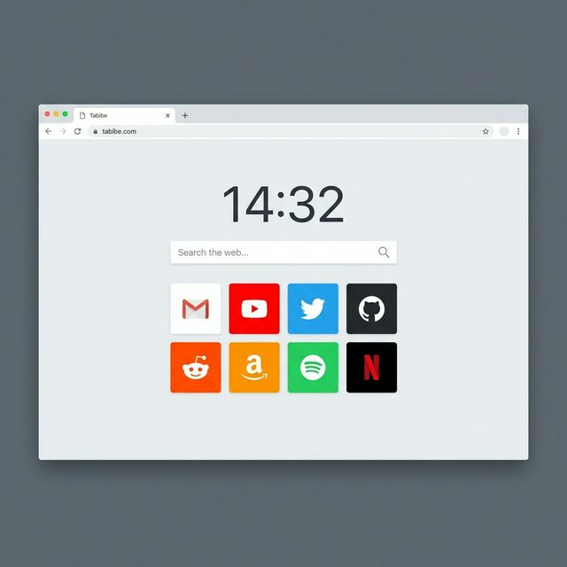

Zaman ve Odaklanma
Yerel dil destekli dijital saat ve tarih widget'ı ile zamanı takip edin. Not paneli ile fikirlerinizi anında kaydedin ve sabitleyin.
Chromium tabanlı tarayıcılar için tasarlanmış, modern, minimalist ve yüksek performanslı yeni sekme (new tab) deneyimi.

Tabibe, üretkenliğinizi artırmak ve tarayıcı deneyiminizi iyileştirmek için ihtiyacınız olan her şeyi sunar.
Yerel dil destekli dijital saat ve tarih widget'ı ile zamanı takip edin. Not paneli ile fikirlerinizi anında kaydedin ve sabitleyin.
Favori arama motorunuzu seçin. En çok ziyaret ettiğiniz siteleri sürükle-bırak destekli ızgara düzeninde veya klasörlerde organize edin.
Dinamik açık/koyu temalar, özel arka plan görselleri ve farklı simge modları (Favicon/Simple Icons) ile Tabibe'yi kendinize uydurun.
10 dil desteği ve düşük kaynak tüketimi. Sistem bellek durumunu anlık olarak takip edebileceğiniz performans odaklı mimari.
Tüm verileriniz yerel depolama alanınızda saklanır. Hiçbir veriniz harici sunuculara gönderilmez.
React + Vite altyapısı ve Manifest V3 ile en modern ve güvenli standartları kullanır.
JSON formatında dışa aktarma ve içe aktarma özellikleri ile tüm ayarlarınız güvence altında.